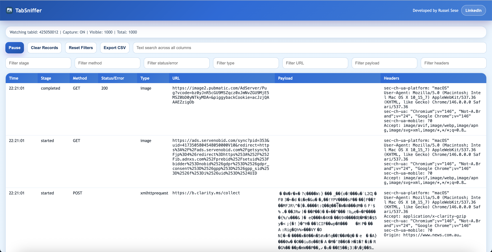
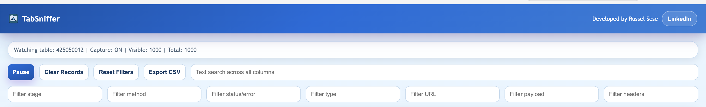

Live Request Timeline
Watch started, completed, and errored requests appear in real time for the source tab that opened TabSniffer — no page reload needed.
TabSniffer captures live HTTP traffic for whatever tab you're on — filter by method or keyword, copy requests as cURL, and export to CSV in one click.

Features
TabSniffer surfaces the requests your tab makes — started, completed, and errored — all in one clean table.
Watch started, completed, and errored requests appear in real time for the source tab that opened TabSniffer — no page reload needed.
Filter by keyword across any column, or narrow down by method, status, or request type to zero in on exactly what you need.
Select any request and copy it as a ready-to-run curl command for bash or cmd — including headers and payload.
Export the current filtered view to a CSV file in one click. Only visible rows are exported — what you see is what you get.
Pause the capture to freeze the current view while you inspect entries, then resume to keep collecting — without losing what you already captured.
TabSniffer only requests the permissions it needs — no broad host access, no tracking, no account required.
See it in action
Open TabSniffer alongside your tab and get a full view of its network activity without leaving the page.
Click the TabSniffer icon on any tab to open a dedicated capture window. Requests stream in as they happen — method, status, URL, payload, and headers all visible at a glance.
The toolbar gives you instant control over your capture session — freeze the view when you spot something interesting, clear the log when you're ready to start fresh, or export the filtered results to CSV.

How it works
Navigate to any site in Chrome — an API dashboard, a web app, a news feed — anything you want to inspect.
A dedicated TabSniffer page opens and begins capturing all network requests made by that source tab.
Use text search or column filters to find the requests you need. Click any row to inspect headers and payload.
Copy a request as cURL, export the view to CSV, or reset the log when you're ready to start a new capture.
Privacy
TabSniffer runs entirely in your browser. Nothing leaves your machine.
TabSniffer is free and contains no advertising of any kind.
No analytics, no telemetry, no usage data sent anywhere.
Captured request logs stay in your browser's memory and go nowhere else.
Install and use immediately. No account, no email, no setup.